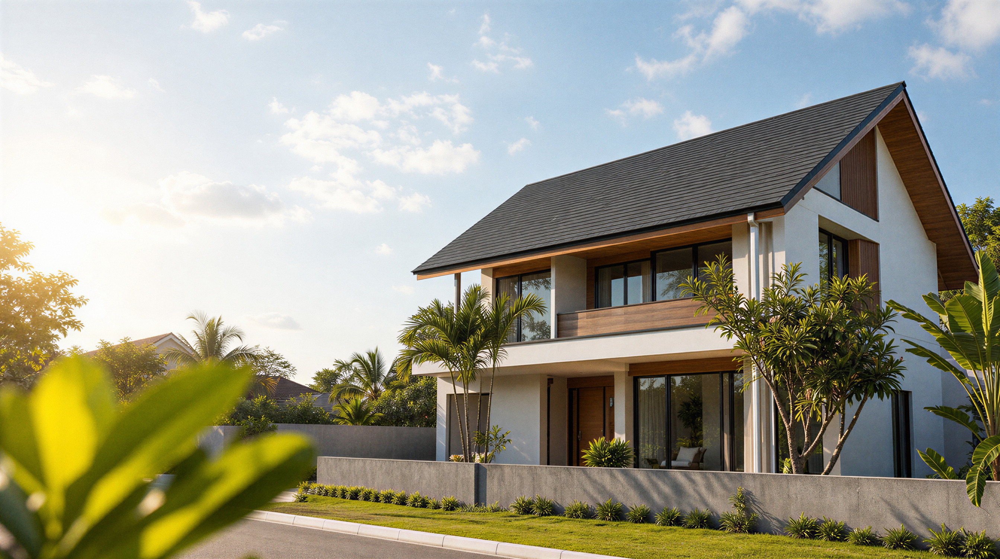
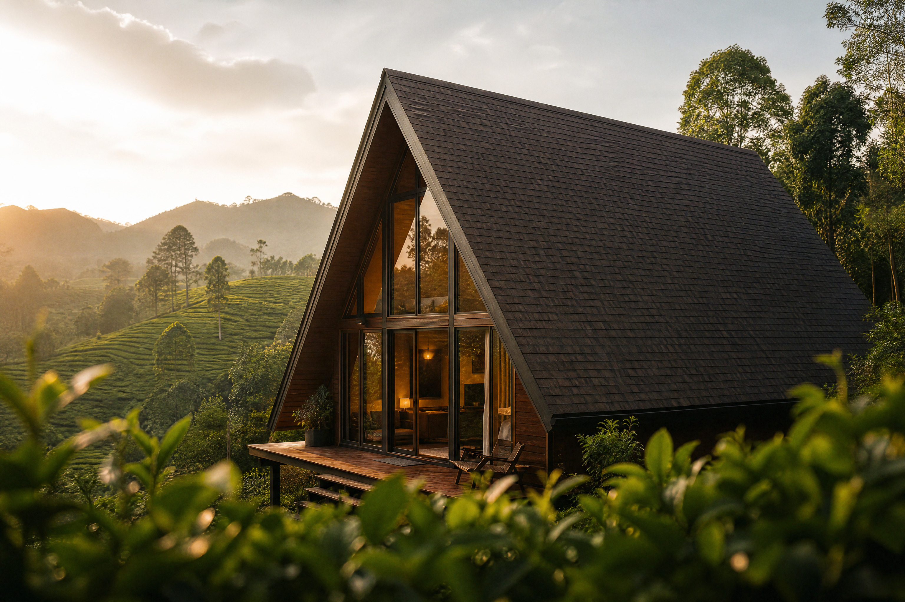
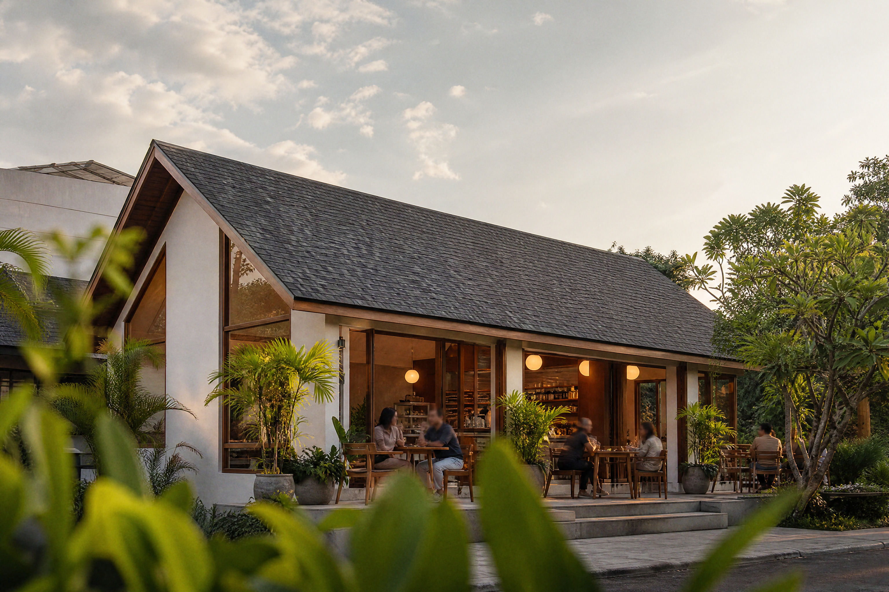
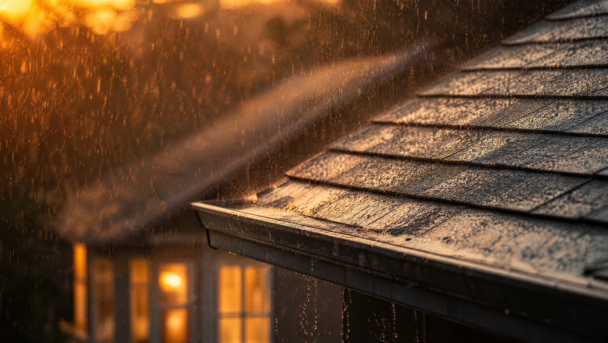
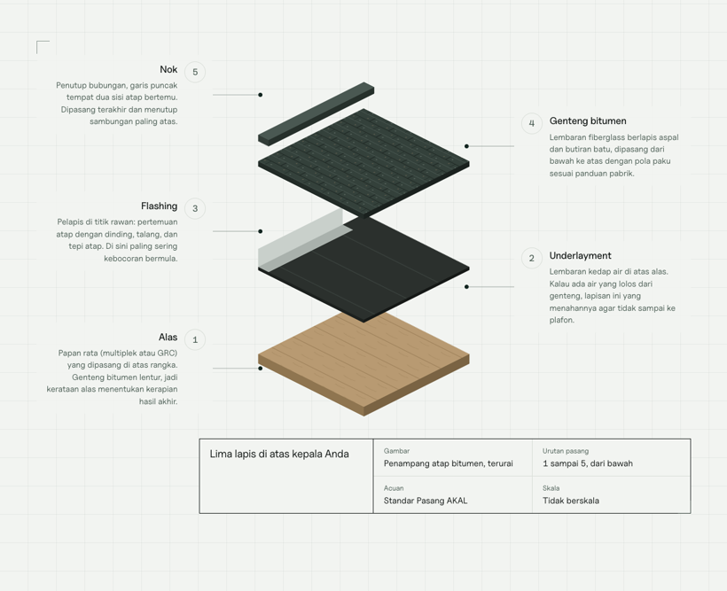

Pasang atap baru
Rangka baja ringan atau kayu, dari alas sampai nok.
MOCKUP — untuk disetujui, belum website

Pasang atap bitumen Maxxi, CTI, dan Javabitumen di Jabodetabek. Harga terbuka sebelum Anda bicara dengan siapa pun.
Butuh untuk proyek perumahan atau gedung? Jalur perusahaan
Ilustrasi, bukan proyek Atapura
Dari rumah baru sampai kafe yang tidak boleh lama tutup. Semua dipasang dengan Standar Pasang AKAL yang sama.
Rangka baja ringan atau kayu, dari alas sampai nok.

Atap curam, hujan deras, kabut. Warna dicocokkan di lokasi.
8,5–13 kg
per m² untuk genteng bitumen, dibanding 40–60 kg/m² genteng beton atau keramik. Rangka lebih ringan bebannya.
Hitung ganti atap
Jadwal kerja tertulis, supaya usaha Anda tidak tutup lebih lama dari perlu.
TDS, TKDN, faktur, termin, dan penawaran resmi berkop untuk diajukan ke atasan atau klien.
Minta penawaran resmiEmpat pertanyaan, satu menit. Hasilnya bisa Anda kirim ke WhatsApp atau simpan untuk dibahas di rumah.
Perkiraan biaya total harga contoh
Rp41 jt – Rp53 jt
5–6 hari kerja untuk 120 m²
Survey gratis sebelum harga final. Bayar hanya ke rekening PT.

Bagian ini tetap seperti versi live (gambar teknik interaktif)

Tujuh tahap, semuanya tertulis. Sebelum uang muka, Anda sudah memegang hasil survey, penawaran berkop, dan kontrak.
Ukur atap, cek rangka, cocokkan warna.
Rincian per item, tanpa biaya kejutan.
Lingkup, termin, garansi ditandatangani.
Hanya ke rekening atas nama PT.
Lima lapis, difoto tiap lapis.
Berita acara, rapor foto, kartu garansi.
Setelah atap selesai Anda terima.
Pesan dari pendiri
“[Isi dari Rama: 2–3 kalimat kenapa Atapura didirikan. Contoh arah: banyak pemilik rumah dirugikan tukang yang asal pasang dan harga yang tidak jelas. Atapura dibuat supaya setiap biaya dan setiap lapis bisa dicek.]”